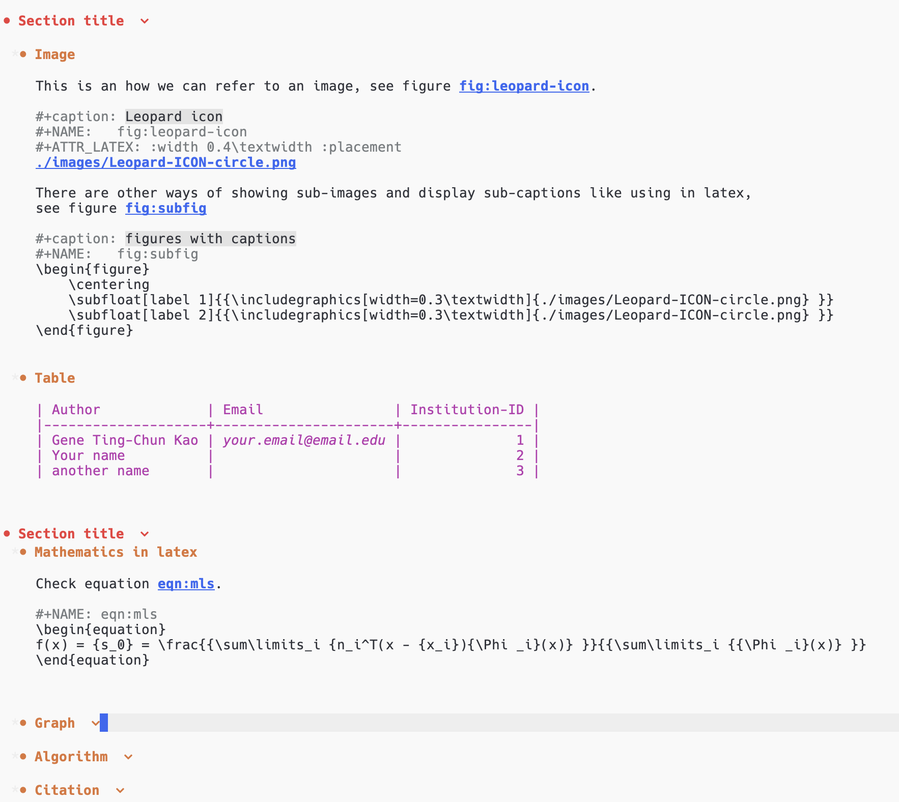
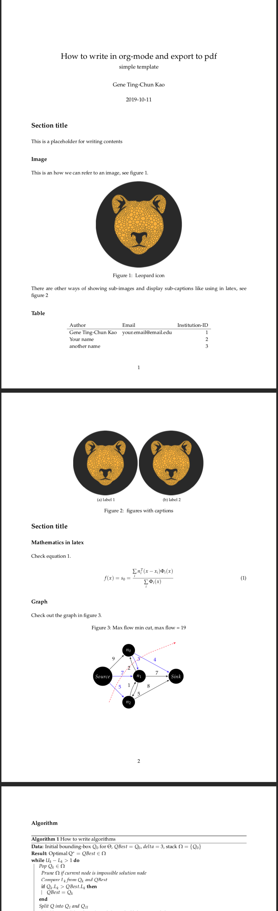

Emacs Org Mode export to pdf
Emacs Org Mode is a perfect tool to do almost anything! I particularly like its slogan and design concept: Organize Your Life In Plain Text!
I use Org Mode for many things, which includes writing a to-do list, building a study plan, writing blog posts (including this one), scribbling documents to organise my thoughts (you can also run code in Org Mode, how cool is that!), and planning a research paper.
I would like to share my .org files with LaTex starter code and show how I use it to write research documents. Later I export them from .org file to .tex then to .pdf. I like this pipeline because I don't need to worry about the layout while writing. I can also combine many different syntaxes, such as latex in the .org file.
Here are some screenshots:
.org file 
.pdf 
Table of Contents
My org-mode templates for latex-style writing
This repo contains different templates as a starter code to write org-mode which can later be exported to latex and pdf.
Emacs settings
I am using Centaur Emacs for my emacs setting, so if you encounter any different exporting result, please refer to the emacs setting and my fork version (in the branch gene-emacs).
Or those lines to your .emacs setting file.
(setq org-latex-pdf-process
'("latexmk -pdflatex='pdflatex -interaction nonstopmode' -pdf -bibtex -f %f"))
(unless (boundp 'org-latex-classes)
(setq org-latex-classes nil))
(add-to-list 'org-latex-classes
'("ethz"
"\\documentclass[a4paper,11pt,titlepage]{memoir}
\\usepackage[utf8]{inputenc}
\\usepackage[T1]{fontenc}
\\usepackage{fixltx2e}
\\usepackage{graphicx}
\\usepackage{longtable}
\\usepackage{float}
\\usepackage{wrapfig}
\\usepackage{rotating}
\\usepackage[normalem]{ulem}
\\usepackage{amsmath}
\\usepackage{textcomp}
\\usepackage{marvosym}
\\usepackage{wasysym}
\\usepackage{amssymb}
\\usepackage{hyperref}
\\usepackage{mathpazo}
\\usepackage{color}
\\usepackage{enumerate}
\\definecolor{bg}{rgb}{0.95,0.95,0.95}
\\tolerance=1000
[NO-DEFAULT-PACKAGES]
[PACKAGES]
[EXTRA]
\\linespread{1.1}
\\hypersetup{pdfborder=0 0 0}"
("\\chapter{%s}" . "\\chapter*{%s}")
("\\section{%s}" . "\\section*{%s}")
("\\subsection{%s}" . "\\subsection*{%s}")
("\\subsubsection{%s}" . "\\subsubsection*{%s}")
("\\paragraph{%s}" . "\\paragraph*{%s}")
("\\subparagraph{%s}" . "\\subparagraph*{%s}")))
(add-to-list 'org-latex-classes
'("article"
"\\documentclass[11pt,a4paper]{article}
\\usepackage[utf8]{inputenc}
\\usepackage[T1]{fontenc}
\\usepackage{fixltx2e}
\\usepackage{graphicx}
\\usepackage{longtable}
\\usepackage{float}
\\usepackage{wrapfig}
\\usepackage{rotating}
\\usepackage[normalem]{ulem}
\\usepackage{amsmath}
\\usepackage{textcomp}
\\usepackage{marvosym}
\\usepackage{wasysym}
\\usepackage{amssymb}
\\usepackage{hyperref}
\\usepackage{mathpazo}
\\usepackage{color}
\\usepackage{enumerate}
\\definecolor{bg}{rgb}{0.95,0.95,0.95}
\\tolerance=1000
[NO-DEFAULT-PACKAGES]
[PACKAGES]
[EXTRA]
\\linespread{1.1}
\\hypersetup{pdfborder=0 0 0}"
("\\section{%s}" . "\\section*{%s}")
("\\subsection{%s}" . "\\subsection*{%s}")
("\\subsubsection{%s}" . "\\subsubsection*{%s}")
("\\paragraph{%s}" . "\\paragraph*{%s}")))
(add-to-list 'org-latex-classes '("ebook"
"\\documentclass[11pt, oneside]{memoir}
\\setstocksize{9in}{6in}
\\settrimmedsize{\\stockheight}{\\stockwidth}{*}
\\setlrmarginsandblock{2cm}{2cm}{*} % Left and right margin
\\setulmarginsandblock{2cm}{2cm}{*} % Upper and lower margin
\\checkandfixthelayout
% Much more laTeX code omitted
"
("\\chapter{%s}" . "\\chapter*{%s}")
("\\section{%s}" . "\\section*{%s}")
("\\subsection{%s}" . "\\subsection*{%s}")))
Export from .org file to .pdf
Use the key combination
C-c C-e l o
For more information, please refer to the official documentation.